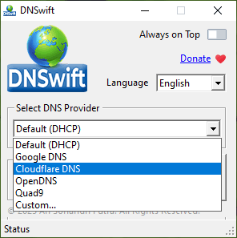
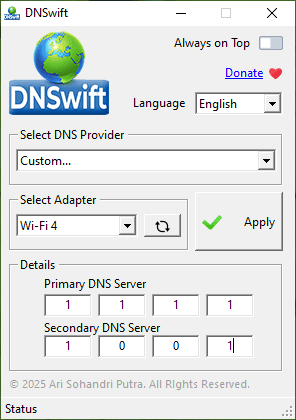

|
| Home |
| FAQ |
| Support |
DNSwift – Frequently Asked Questions (FAQ)
1. What is DNSwift?
DNSwift is a lightweight Windows application that simplifies the process of changing DNS server settings for your network adapters. It supports popular DNS providers and allows for custom DNS entries
2. Which operating systems are supported?
DNSwift is compatible with Windows 7, Windows 8, Windows 10, and Windows 11
3. Which DNS providers are included?
DNSwift includes several popular DNS services:
-
Google DNS: 8.8.8.8, 8.8.4.4
-
Cloudflare DNS: 1.1.1.1, 1.0.0.1
-
OpenDNS: 208.67.222.222, 208.67.220.220
-
Quad9: 9.9.9.9, 149.112.112.112
4. Can I set my own custom DNS servers?
Yes. Select Custom... from the DNS Provider dropdown, then enter your desired Primary and Secondary DNS addresses manually.
5. How do I reset my DNS settings back to automatic?
To restore automatic DNS (DHCP), select Default (DHCP) from the DNS Provider dropdown and click Apply.
6. My network adapters are not showing up. What should I do?
Click the Refresh Adapters button. If no adapters appear, make sure your network is active.
7. Is it safe to use third-party DNS like Google or Cloudflare?
Yes. These are trusted DNS providers used globally. However, it's always good to review each provider’s privacy policy before switching.
8. How can I get help or support?
For technical assistance, please contact:
arisohandriputra@gmail.com
© 2025 Ari Sohandri Putra. All Rights Reserved.
| Download DNSwift 1.0 Build 2025.05.12 | ||
| Download | 1.5 MB | Win7/8/10/11 |
| DNSwift Preview | ||
|  | ||
|  | ||